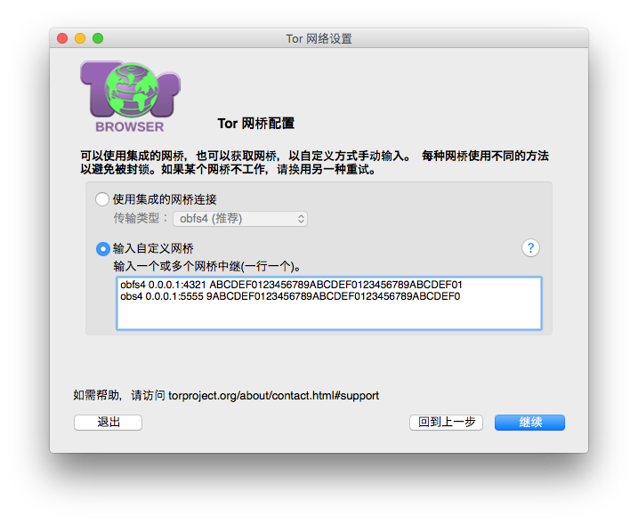

网桥
大多数可插拔传输（诸如 obfs3 和 obfs4）依赖于使用“网桥”中继。与普通的 Tor 中继类似，网桥由志愿者运行。然而与普通的中继普通，它们并不是公开列出，因此敌人不能轻易识别它们。将网桥与可插拔传输结合使用有助于掩饰您使用 Tor 的事实。
其他可插拔传输层（例如 meek）使用不同的抗审查技术，不依赖于网桥。您不需要为了使用这些传输而获取网桥地址。
获取网桥地址
因为网桥地址非公开，您需要自行请求。您有两个选项：
访问 https://bridges.torproject.org/ 并按照流程操作，或者
使用 Gmail、Yahoo 或 Riseup 的邮箱服务发送电子邮件至 bridges@torproject.org ，或者
输入网桥地址
在您获得一些网桥地址后，您需要将它们输入到 Tor 启动器中。
当询问您的互联网服务提供商 (ISP) 是否封锁了 Tor 网络的连接时，选择“是”。选择“使用自定义网桥”，然后输入各网桥的地址（每行一条）。

点击“连接”以便创建洋葱路由回路。使用网桥可能会让网络连接速度比使用一般的中继节点稍慢一点。如果连接失败的话，可能是因为您所指定的网桥目前并非正常运作中，请使用上面所提的方法获取更多的网桥地址后，再行尝试。